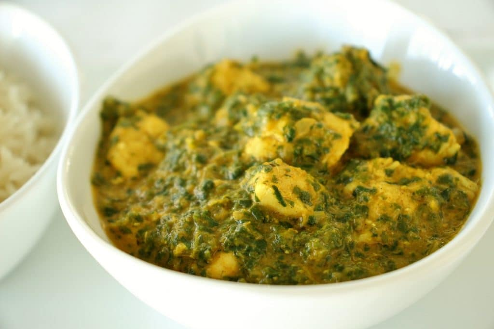

Chicken Saag
Home Page

Description
Chicken saag is a classic Indian dish made with chicken, spinach, spices, and sour cream. Serve with basmati rice.
Ingredients
- ¼ cup vegetable oil
- 1 (3 pound) whole chicken, cut into pieces
- 2 pounds fresh spinach, rinsed and chopped
- ¼ cup water
- 2 large onions, minced
- 5 cloves garlic, minced
- 1 (1 inch) piece fresh ginger root, minced
- 1 (14.5 ounce) can crushed tomatoes
- 1 teaspoon ground coriander
- 1 teaspoon salt
- ½ teaspoon cayenne pepper, or more to taste
- ½ teaspoon ground turmeric
- 2 cardamom pods
- 2 whole cloves
- 1 tablespoon water, if needed
- ¼ cup milk
- 1 teaspoon garam masala
- 6 tablespoons sour cream
- 2 tablespoons butter
Steps
- Heat oil in a large skillet over medium heat; add chicken pieces and cook until browned, about 8 minutes per side. Set chicken aside.
- Place spinach into a large pot with 1/4 cup of water; bring to a boil, cover, and remove from heat. Allow spinach to steam for about 10 minutes; transfer into a blender and pulse until very finely chopped. Set spinach aside.
- Place onions, garlic, and ginger into the skillet; fry over medium heat, stirring frequently, until lightly browned, about 10 minutes. Pour in tomatoes, ground coriander, salt, cayenne pepper, turmeric, cardamom, and cloves; stir in 1 tablespoon water, and cook, stirring frequently, for 10 minutes.
- Pour in milk and stir to combine. Add browned chicken pieces; bring to a simmer, reduce heat, cover, and simmer until chicken is tender, about 20 minutes. Stir in spinach and garam masala; cook until spinach starts to stick to the skillet, about 15 minutes.
- Stir in sour cream and bring to a simmer. Remove from heat and stir in butter.